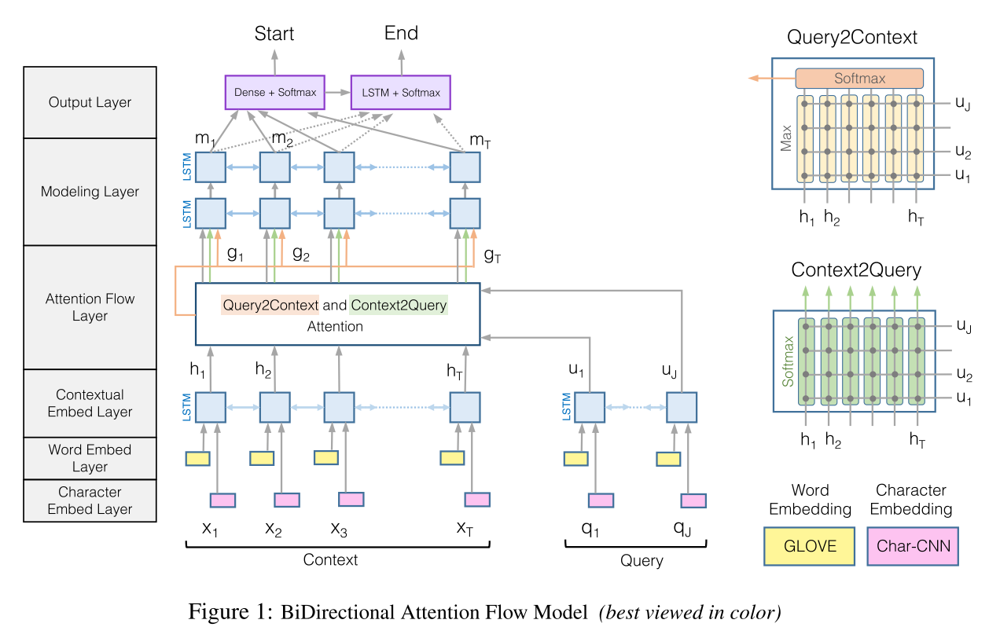
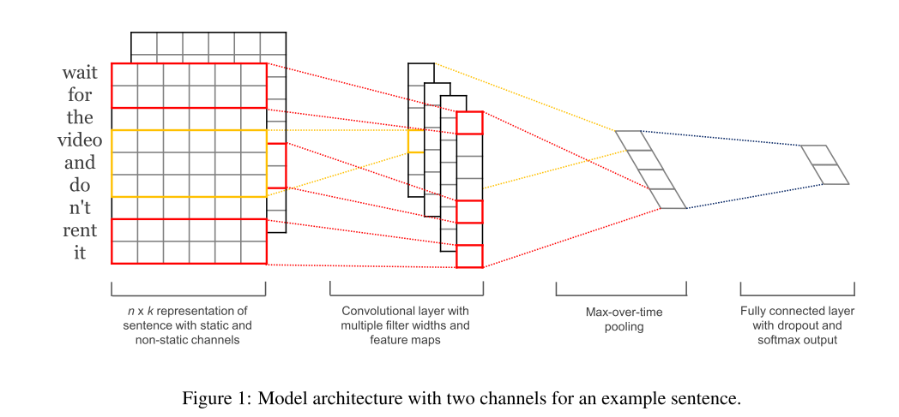

1.背景介绍
BiDAF全称是Bi-Directional Attention Flow network, 它使用了character-level, word-level和contextual 层面的embeddings, 并且较为创新的使用了双向注意力即context-to-query和query-to-context来获得query-aware的上下文表示.
2. 亮点
BiDAF的创新点主要在于对attention机制进行了改进, 主要是提出了双向注意力机制, 据作者说则有以下几点改良:
- 注意力不仅仅用于提取相关信息的model层,还会一直flow到后面的model层和output层, 减少了过早提取信息造成的损失.
- 使用了memory-less的attention机制,即没有使用lstm的t-1时刻的隐藏状态来计算t时刻的注意力, 而仅仅是通过passage和query的表征向量来计算注意力.
- 使用了双向的注意力机制, 即 context-to-query和query-to-context的注意力.
3.模型细节

Character Embedding Layer

$x_{i:i+j}$ 表示字母$x_i,x_{i+1},…,x_{i+j}%+$的拼接, $x_i \in R^k$ , 假设有卷积核$W \in R^{h \times k}$ , 特征$c_i$从字母$x_{i:i+h-1}$ 中提取而来
$$c_i = f(w \centerdot x_{i:i+h-1} + b )$$
把卷积核应用到所有位置上得到feature map c
$$c = [c_1,c_2,…,c_{n-h+1}],c \in R^{n-h+1}$$
应用max pooling则得到 $\widehat c = max(c)$, 每个卷积核一个特征值,100个卷积核即100维的Character-lever word representation.
Word Embedding Layer
word的embedding使用Glove作为预训练的词向量,然后将character-level和word-lever的embedding拼接后送入Highway Network,分别得到context和query的向量化表示.
Contextual Embedding Layer
将上层网络的输入送入到双向LSTM中进行包含上下文相关信息的编码,得到context的表示$H \in R^{2d \times T}$ 和query的表示$U \in R^{2d \times J}$.
Attention Flow Layer
BiDAF的attention计算不依赖于lstm网络的隐藏层状态,单单利用context和query的表征向量加上一个相似度函数来计算.
相似度矩阵$S \in R^{T \times J}$, $S_{tj}$是第t个context中token和第j个query中token的相似度:
$$S_{tj} = \alpha (H_{:t},U_{:j}) \in R$$
$\alpha$ 是相似度函数, $\alpha(h,u) = W^T_{(s)}[h;u;h \circ u]$
Context-to-query Attention
$S_{t:}$ 即第t个context的token和所有query中token的相似度,经过softmax函数后得到$a_t$ , $a_t = softmax(S_{t:}) \in R^J$和对query加权后,即可得到attended query vectors即$\widetilde{U}_{:t} = \sum_ja_{tj}U_{;j}$
Query-to-context Attention
在S矩阵中每一行取最大值,即代表query对这一行所代表的context的token的关注程度, $b = softmax(max_{col}(S)) \in R^T$, 根据关注程度对context加权$\widetilde{h} = \sum_tb_tH_{:t} \in R^{2d}$,加权后重复T词次,得到attended context vertors $\widetilde{H} \in R^{2d \times T}$
最后输出$G$ 矩阵
$$G_{:t} = \beta(H_{:t}, \widetilde U_{:t},\widetilde H_{:t}) \in R^{dG}$$
$G_{:t}$是对应第t个context word的向量, $\beta$ 可以是任意的神经网络,也可以是一些简单的点乘拼接运算.
作者使用$\beta(h,\widetilde u,\widetilde h) = [h;\widetilde u;h \circ \widetilde u;h \circ \widetilde h] \in R^{8d \times T}$
Model Layer
Model layer 输入是G, 基于注意力去获得query-aware的context的representation, 输出$M \in R^{2d \times T}$
Output Layer
预测开始位置和结束位置的概率.
$$p^1 = softmax(W^T_{(p^1)}[G;M])$$
$$p^2 = softmax(W^T_{(p^2)}[G;M^2])$$
$M^2$是把M矩阵传入到另一个lstm网络里得到的.
loss使用负对数去最大化初始位置和结束位置的预测概率.